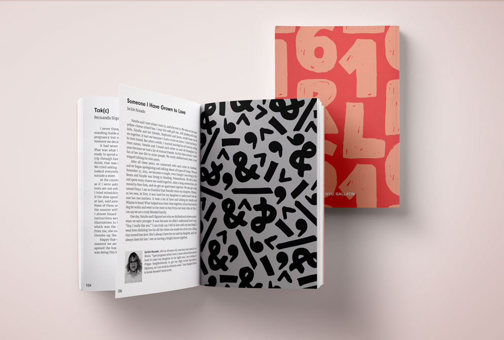
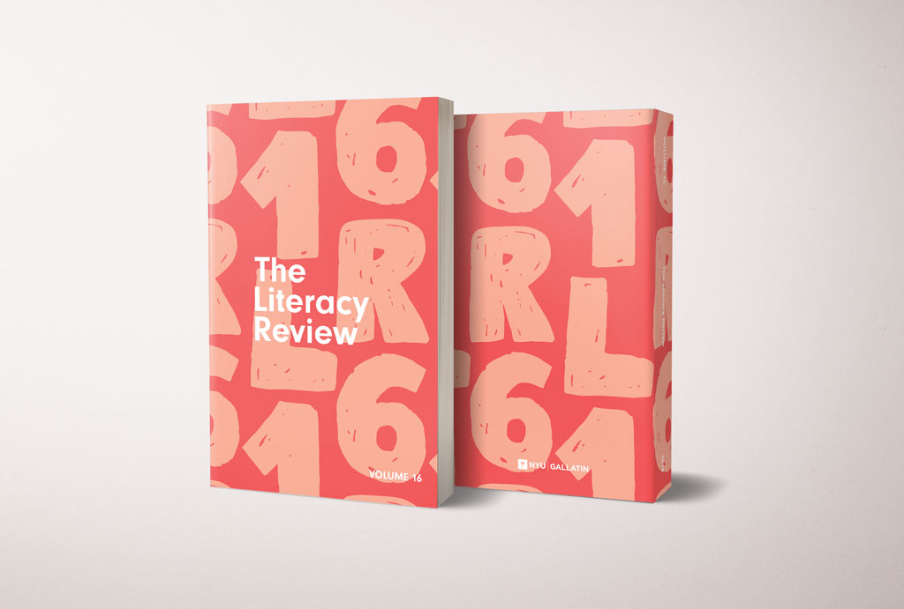
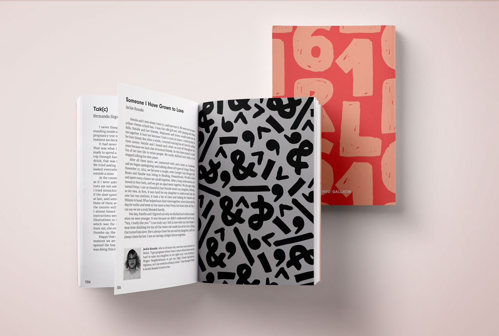
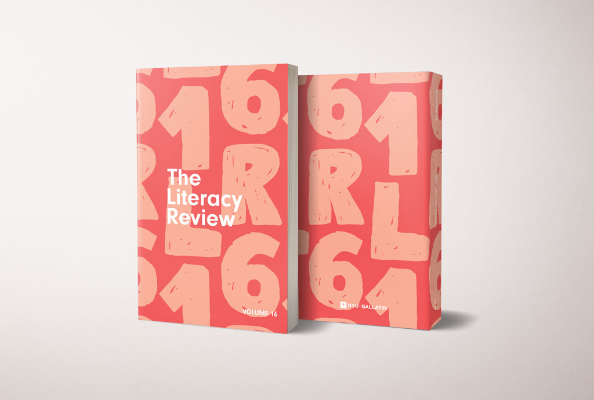
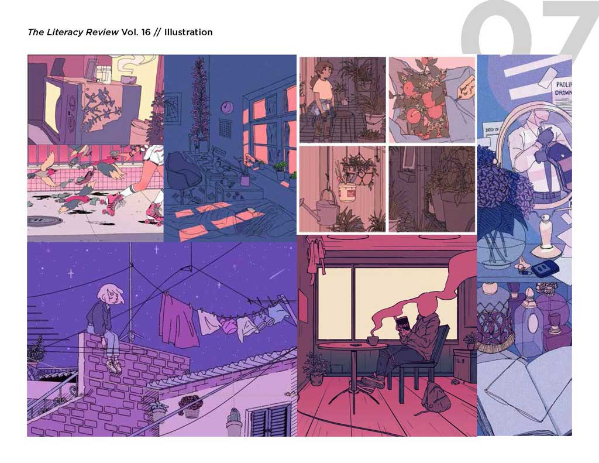
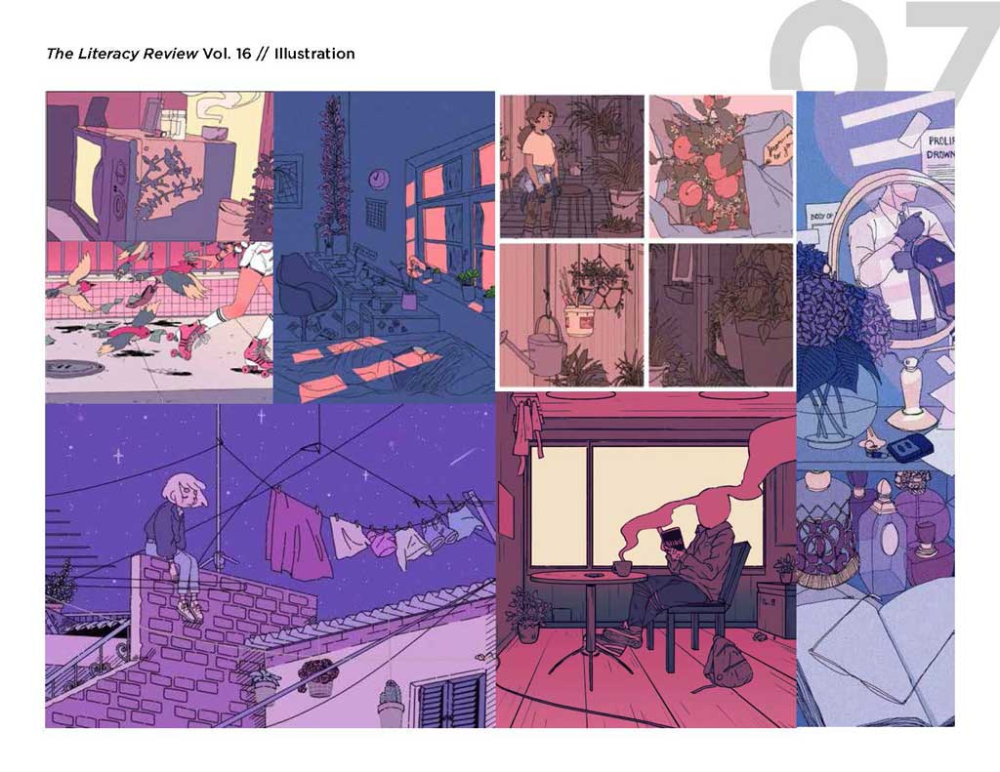

The Literacy Review is an annual publication of writing from students in English as Second Other Language (ESOL) programs across New York City. Working alongside the editorial team and the journal's supervisors, I was responsible for the art direction and design of The Literacy Review's 16th volume. The journal was published by the Gallatin School of Individualized Study in May 2018. The full publication can be read here.
Creative direction drew inspiration from the nuances of learning English. In addition to deriving all of the designs from type, the cover and section dividers are visually distinct, reflecting the multitude of experiences of the contributors. Some pieces weave tales of excitingly vivid fiction, describe the writer's experience learning English, or reflect on the writer's complicated relationship with leaving their hometown. The Literacy Review seeks to highlight the diversity of its contributors' stories and emphasize the plurality of experiences associated with literacy.
 



I met regularly with the editorial team to pitch creative directions and present design proposals. The following shows early cover ideas and mood boards from when I was proposing concepts to the team.
 
